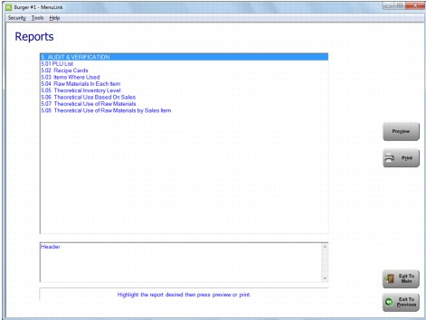
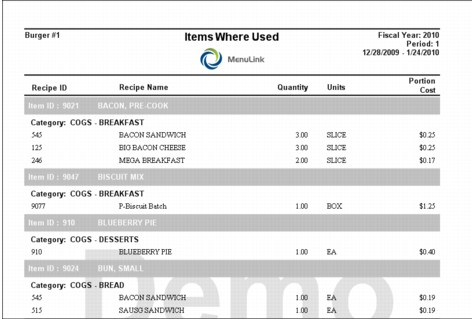
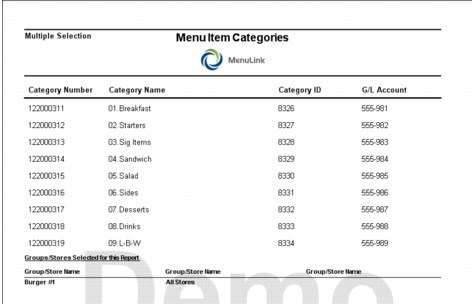
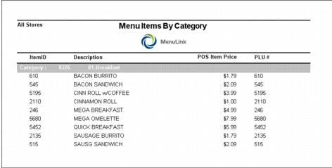
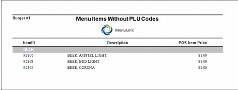
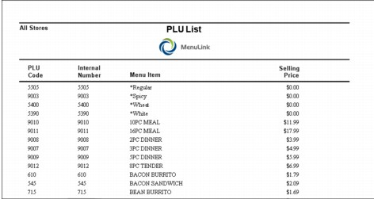
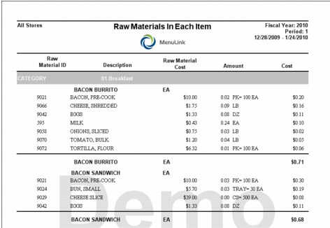
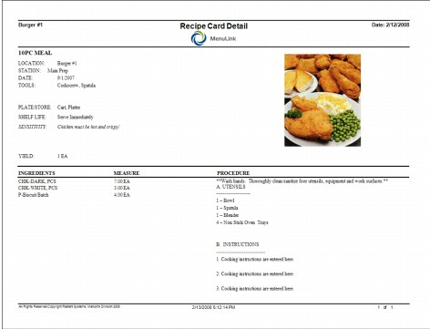

Recipe Reports This section includes samples and descriptions of the recipe and menu item/prep item related reports available in MenuLink Client. Depending on your system set-up, you may not have access to all reports and selection options described. Contact your system administrator if there is a report or option listed that you want to use. For general information on how to view and print reports, as well as selecting report options, see Viewing and Printing Reports. You can access Recipe reports from the Reports button on the Recipes Switchboard (Recipe reports only, as shown in the screen example below) or from the Reports button on the Main Switchboard (all Inventory reports).  Items Where Used Report This report lists all the menu items in which an ingredient (raw item or prep item) is used. The report also lists the portion used in the recipe as well as the food cost of the portion.  Menu Item Categories Report This report lists all menu item categories (i.e., this report does not list prep item categories or raw item categories) in your system, ID numbers, and GL numbers, if defined.  Menu Items by Category Report This report lists menu items, sorted by menu item category (each category begins on a new page). If a menu item does not have a menu item category assigned, it will not be listed in this report.  Menu Items Without PLU Codes Report This report lists menu items that do not have Price Lookup Codes (PLU) also known as POS Codes defined, sorted by menu item category.  PLU List Report This report lists all menu items (sorted alphabetically) and their PLU codes, MenuLink ID, and Selling Price.  Raw Materials in Each Item Report This report is sorted by the Item Category then lists menu items and the raw materials that make up the recipe. The report lists the raw material ID, cost of the raw material, and amount used in the recipe.  Recipe Card Detail Report This is a custom report that displays all of the important information about an item in one place. The report includes your company logo, a picture of the finished item, a list of ingredients, the procedures to make the items, the utensils needed to prepare the item as well as any sensitivities associated with the menu item. 